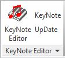

DevDays, Keynote Manager and REX Extensions
Let's highlight a few recent threads from the Revit API discussion forum.
Before getting to those, a quick pointer to the DevDays Online recording from last week:
- DevDays online presentations on Revit API updates
- External command with ribbon button sample
- RevitAddinKeyNoteSystem keynote manager
- REX extensions versus Revit add-ins
- Reloading Revit links from user selected folder
- Converting all parameter values to metric
DevDays Online Presentations on Revit API Updates
Here is the 55-minute YouTube recording of the Autodesk DevDays Online 2017 presentation on Revit API, Civil 3D and InfraWorks updates:
For ADN members only, a companion recording containing additional confidential information on Revit API updates for ADN members has been posted to the ADN site.
External Command with Ribbon Button Sample
Continuing with the forum threads, let's begin with this simple one on Revit add-ins:
Question: I want to start an external tool from a button in the ribbon.
Answer: Read the Revit API getting started material. That explains all you need.
If you wish to skip all documentation, you can also just run through the hello world examples in the developer guide.
Finally, you can look at a real-world example in the RevitAddinKeyNoteSystem GitHub repository.
It contains an add-in that does exactly what you are asking about.
It installs a ribbon panel where the KeyNote Editor button on the panel starts an external tool.
The file AppKNS.cs contains the code that builds the ribbon.
OpenKeyNoteSystemCommand.cs implements the code that starts the external application.
RevitAddinKeyNoteSystem Keynote Manager
The pointer above from Allan 'aksaks' 'akseidel' Seidel of WmTao answers a very basic query on getting started with the Revit API.
Allan's RevitAddinKeyNoteSystem keynote manager does much more, though.
It implements the Revit ribbon component for the WpfRevitUserKeynoteManager application.

The ribbon panel it creates handles four basic user needs in regard to Revit User Keynotes:
- KeyNote Editor – launches the WpfRevitUserKeynoteManager application, a user keynote editor, with the current Revit project's user keynote file loaded up ready for creating and editing user keynotes. This editor provides a few convenient editing features germane to user keynote table files. It allows more than one person to edit the same user keynotes file at the same time, provided they edit different keynote categories.
- UpDate – reloads the current Revit project's user keynote table file.
- KeyNote – launches the Revit place keynote command.
- Display Help – explains how to use the WpfRevitUserKeynoteManager application by launching it in its own documentation mode.
Many thanks to Allan for sharing this!
Here are some other of Allan's contributions here:
- Stacked Ribbon Button Panel Options
- WTA Elec, FireP and 3D Aimer Tools
- WTA Mechanical Family Placement Add-in
- AKS Opener
REX Extensions versus Revit Add-Ins
This should really be pretty obvious, but somebody asked about REX extensions vs Revit add-ins:
Question: What is the difference between extensions and plug-ins?
I've been writing many plug-ins, and while diffing through the SDK folder I came across the REX framework and extensions.
What are the benefits of one over the other?
Answer: The REX framework and extensions are Revit structure specific and built on top of pure simple Revit API add-ins.
Here are some previous discussions of various aspects of REX:
- The REX SDK
- REX content generator
- Structural Analytical Code Checking and Results Builder
- Framing Cross Section Analyser and REX
- Framing Cross Section Analyser and REX in Revit 2015
- REX Add-In Development and Migration
- REX SDK FreezeDrawing Sample
Reloading Revit Links from User Selected Folder
We discussed automatically reloading links after migration and loading and unloading Revit links quite a while ago.
A pretty basic question on how to use this functionality was raised and solved by Andrea @ATassera Tassera in the Revit API discussion forum thread on reloading Revit links from....
Question: My add-in is currently getting the names of all linked files in the model, reading the file path from each; the user is prompted to choose from a folder depending on whether the name of the link is contained in the file path; now, what I want to do is to actually reload the files from the new file path ... but it's not working.
I actually had a look at the discussion on automatically reloading links after migration while developing my script.
Later, after several iterations, Andrea ended up sharing the following solution:
Solution: Thanks a lot for your reply and for the suggestions. I actually applied that bit of methodology that you suggested and I ended up finding the solution and making the tool work!
The error was the revLinkType parameter that was pointing to the wrong thing.
I modified the loading part completely pairing ModelPath from where to reload (taken by the user selection) and the RevitLinkType to actually reload (the files linked in the folder) through the Zip and Tuple.Create methods.
The final code is available in the forum thread.
The purpose of the script is to prompt the use with a file browser to select which files wants to be reloaded, then match file path of the new files where they contain the name of the linked file, create a tuple so you have the same order of ModelPath and RevitLinkOption and you LoadFrom with a for each file.
Converting All Parameter Values to Metric
Another solution was shared by Ali Asad in the Revit API discussion forum thread on converting all parameter values from imperial units to metric units:
Question: Following up Jeremy's solution on converting imperial unit to metric unit.
It's hard for me to figure out which enumeration value of DisplayUnitType to choose for all parameters, because all parameters may have values in different formats i.e., mm, V, VA.
Currently, I'm retrieving the properties values in imperial units and I'd like to know, does the Revit API provide any easy way to automatically convert the return value format of any type-parameter to metric units?
I cannot determine which DisplayUnityType enum I should use to get the value in the right format.
Answer: I do not think there is a generic method to convert all imperial units to metric.
Basically, Revit uses standard metric SI units for everything except length, which is in feet.
This is (almost) the only non-SI unit used.
You will probably need to implement a conversion for each unit type you encounter.
It is probably quite easy once you understand the basic principles.
I looked at The Building Coder category on units (category page).
Here are the posts that look most useful to me to help answer your question:
- Unit abbreviations
- UnitUtils converting units for unit weight
- Localised unit abbreviations
- Mapping display unit type to unit types
- Unit abbreviations
- Revit 2013 unit conversion utility
- Unit conversion and display string formatting
You could parse the unit abbreviation string, determine how many inches, feet, mm, metres, etc. it contains, and multiply by a conversion factor from imperial to metric for each imperial unit encountered.
Response: Thanks for the solution!
I used it to write a UnitConverter script that converts all imperial units to metric units automatically.
Here is the ExtractFamilyParameterData.cs module showing how it is used.
Please feel free to share it with the community.